CONQUISTADORES DEL MUNDO
Romanos, budistas, judíos y cristianos, del siglo I al IV
Hemos visto que Pompeya, una ciudad romana, contenía muchos reflejos del arte helenístico, pues el arte permaneció más o menos inalterable mientras los romanos conquistaron el mundo y fundaron su propio imperio sobre las ruinas de los reinos helenísticos. La mayoría de los artistas que trabajaron en Roma fueron griegos, y la mayoría de los coleccionistas romanos adquirían obras de grandes maestros de Grecia, o copias de ellas. Sin embargo, el arte cambió, en cierta medida, cuando Roma se convirtió en dueña del mundo. A los artistas les fueron encomendadas nuevas tareas y tuvieron que acomodar a ellas sus métodos. Las realizaciones más sobresalientes de los romanos tuvieron lugar, probablemente, en la arquitectura civil. Todos conocemos sus carreteras, sus acueductos, sus baños públicos. Hasta las ruinas de esas construcciones siguen pareciendo impresionantes. Se siente uno casi como una hormiga al pasear por Roma entre sus enormes pilares. Fueron esas ruinas, en efecto, las que hicieron imposible que los siglos posteriores olvidaran «la grandeza que tuvo Roma».
La más famosa de esas construcciones romanas es, quizá, el coso conocido con el nombre de Coliseo (ilustración 73). Es un edificio romano característico que ha llenado de admiración a todas las épocas. En conjunto se trata de una estructura utilitaria, con tres órdenes de arcos, uno sobre el otro, para sostener los asientos que el gran anfiteatro poseía en su interior. Pero el arquitecto romano cubrió esos arcos con una especie de pantalla de formas griegas. En realidad, aplicó los tres estilos de construcción empleados en los templos griegos. El primer piso es una variante del estilo dórico —incluso se conservaron las metopas y los triglifos—; el segundo piso es jónico; y el tercero y cuarto, de semicolumnas corintias. Esta combinación de estructura romana con formas griegas u órdenes ejerció enorme influjo sobre los arquitectos posteriores. Si paseamos la vista en torno a nuestras ciudades, encontraremos fácilmente los testimonios de este influjo.
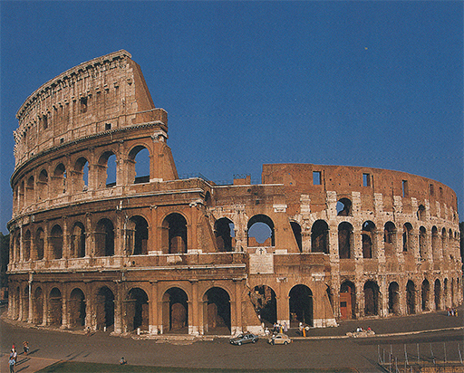
73 El Coliseo, Roma, h. 80. Anfiteatro romano.
Seguramente, ninguna de sus creaciones arquitectónicas dejará una impresión más duradera que los arcos de triunfo que los romanos erigieron por todo su imperio: en Italia, Francia (ilustración 74), el norte de África y Asia. La arquitectura griega se componía por lo general de unidades idénticas, y lo mismo es cierto en el Coliseo; pero los arcos de triunfo utilizan los órdenes para enmarcar y acentuar el gran paso central, así como para flanquearlo con aperturas más estrechas. Se trataba de una disposición que se podía emplear en la composición arquitectónica del mismo modo en que se utiliza un acorde musical.
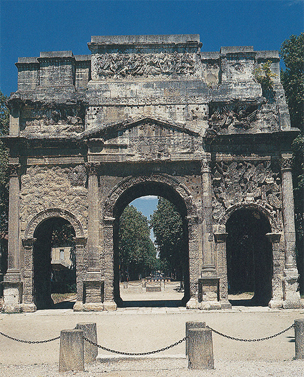
74 Arco de triunfo de Tiberio, Orange, Francia meridional, h. 14-37.
La característica más importante de la arquitectura romana es, no obstante, el uso del arco. Este invento intervino poco, o nada, en las construcciones griegas, aunque pudo ser conocido por sus arquitectos. Construir un arco con piedras independientes en forma de cuña constituye una difícil proeza de ingeniería. Una vez dominado este arte, el arquitecto pudo emplearlo en proyectos cada vez más atrevidos. Pudo prolongar los pilares de un puente o de un acueducto, e incluso llevar su aplicación a la construcción de techos abovedados. Los romanos se convirtieron en grandes expertos en el arte de abovedar en virtud de varios recursos técnicos. El más maravilloso de esos edificios es el Panteón, o templo de todos los dioses. Es éste el único templo de la antigüedad clásica que sigue aún siendo lugar de adoración, pues en la primera época del cristianismo fue convertido en iglesia, lo que lo preservó de la ruina. Su interior (ilustración 75) es una gran estancia circular que posee, en lo alto de su bóveda, una abertura a través de la cual se ve el cielo. No hay ningún otro vano, pero todo el recinto recibe amplia iluminación desde arriba. Conozco pocos edificios que comuniquen tal impresión de armonía serena. No se experimenta ninguna sensación de pesadez. Las enormes bóvedas parecen desplegarse con naturalidad sobre el visitante, como una repetición de la bóveda celeste.
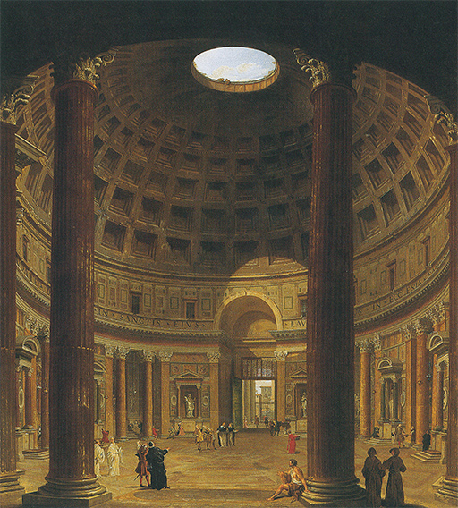
75 G. P. Pannini, Interior del Panteón, Roma, h. 130. Pintura; Museo Estatal de Arte, Copenhague.
76 Emperador Vespasiano, h. 70. Mármol, 135 cm de altura; Museo Arqueológico Nacional, Nápoles.
Fue característico de los romanos tomar de la arquitectura griega lo que les gustaba y aplicarlo a sus propias necesidades. Lo mismo hicieron en todos los terrenos. Una de sus necesidades principales consistió en poseer buenos retratos con expresión de vida. Éstos desempeñaron su papel en la primitiva religión de los romanos. Fue costumbre llevar imágenes de los antepasados, moldeadas en cera, en las procesiones funerarias. Apenas cabe dudar de que este uso haya estado en relación con aquella creencia del Egipto antiguo según la cual la imagen de las personas conserva su alma. Posteriormente, cuando Roma se convirtió en un imperio, el busto del emperador siguió siendo contemplado con religioso temor. Sabemos que cada romano tuvo que quemar incienso delante de ese busto en señal de fidelidad y obediencia, y que la persecución de los cristianos dio inicio por la negativa de éstos a aceptar esta exigencia. Lo extraño es que, pese a esta solemne significación de los retratos, los romanos permitiesen que fueran realizados por los artistas con mayor verosimilitud y menos intentos halagadores de lo que los griegos intentaron nunca. Acaso emplearon mascarillas en ocasiones, adquiriendo así su sorprendente conocimiento de la estructura y los rasgos de la cabeza humana. Sea como fuere, conocemos a Pompeyo, Augusto, Tito o Nerón casi como si hubiéramos visto sus rostros en los noticiarios. No hay propósito alguno de halago en el busto de Vespasiano (ilustración 76), nada que pretenda conferirle apariencia de dios. Puede ser un opulento banquero o el propietario de una compañía de navegación. Sin embargo, nada resulta mezquino en este retrato romano, pues del modo que fuere el artista consiguió otorgarle apariencia de vida sin caer en lo trivial.
Otra tarea que los romanos encomendaron al artista resucitó una costumbre que hemos visto en el antiguo Oriente (ilustración 45). También ellos deseaban proclamar sus victorias y describir sus campañas. Trajano, por ejemplo, erigió una gran columna para mostrar en una crónica plástica sus guerras y sus triunfos en Dacia (la Rumania actual). Allí se ve a los legionarios romanos saqueando, combatiendo y conquistando (ilustración 78). Toda la habilidad conseguida durante siglos de arte griego es puesta a contribución en esas hazañas de reportaje de guerra. Pero la importancia que los romanos concedieron a una cuidada representación de todos los detalles, así como a la clara narración que fijaría los hechos de la campaña, contribuyó a variar el carácter del arte. Ya no fue el propósito más importante el de la armonía, el logro de la belleza o la expresión dramática. Los romanos eran gente práctica y se preocupaban menos que los griegos en imaginar dioses. Con todo, sus métodos plásticos de narrar las proezas de los héroes resultaron de gran valor para las religiones que entraron en contacto con su dilatado imperio.
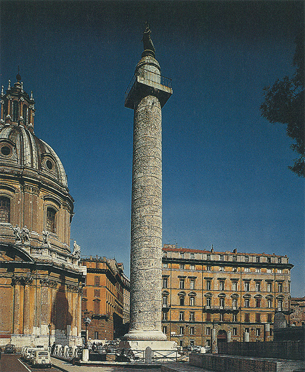
77 Columna de Trajano, Roma, h. 114.
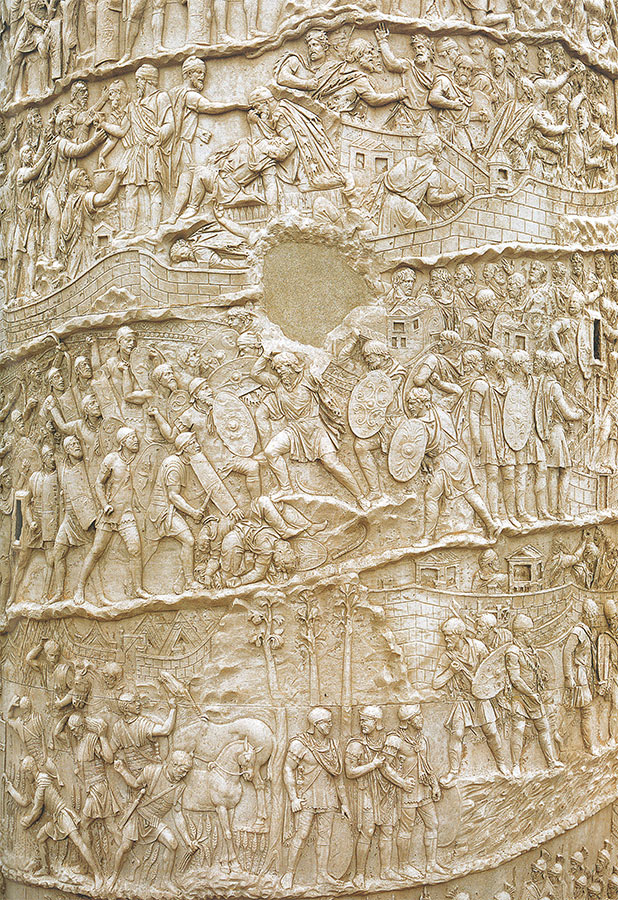
78 Detalle de la ilustración 77; escenas que muestran la caída de una ciudad (arriba), una batalla contra los dados (centro), y a los soldados cortando maíz fuera de la fortaleza (abajo).
79 Retrato de hombre, h. 100. Pintado sobre cera caliente, de una momia hallada en Hawara, Egipto; 33 x 17,2 cm; Museo Británico, Londres.
En los primeros siglos de nuestra era, el arte helenístico y romano desplazó, incluso de sus propios reductos, al de los imperios orientales. Los egipcios continuaban enterrando a sus muertos como momias, pero en lugar de añadirles imágenes suyas ejecutadas en estilo egipcio, los hacían pintar por un artista que conociera todos los recursos del retrato griego (ilustración 79). Estos retratos, que estaban realizados por un artesano humilde a bajo precio, nos sorprenden aún por su vigor y su realismo. Pocas obras del arte antiguo parecen tan frescas y modernas.
Los egipcios no eran los únicos en adaptar los nuevos métodos artísticos a las necesidades religiosas. Hasta en la lejana India, la manera romana de describir un tema y de glorificar a un héroe fue adoptada por artistas que se dedicaron a la tarea de ilustrar la narración de una conquista incruenta: la historia de Buda.
El arte de la escultura floreció en India mucho antes de que la influencia helenística alcanzara este país; pero en la región fronteriza de Gandhara fue donde se mostró por vez primera la figura de Buda en relieves que se convirtieron en los modelos del arte budista posterior. En la ilustración 80 vemos al joven príncipe Gautama abandonando la casa de sus padres rumbo al desierto. Es la gran renuncia de que habla la leyenda. Al salir el príncipe de palacio, habla así a Kantaka, su corcel favorito: «Mi querido Kantaka, te ruego que me lleves una vez más por esta sola noche. Cuando me haya convertido en Buda con tu auxilio, traeré la salvación al mundo de los hombres y los dioses.» Si Kantaka tan sólo hubiera relinchado o hecho algún ruido con sus cascos, la ciudad se habría despertado e impedido la partida del príncipe. Por ello, los dioses velaron su emisión de sonidos y colocaron sus manos bajo sus cascos allí por donde avanzaba.
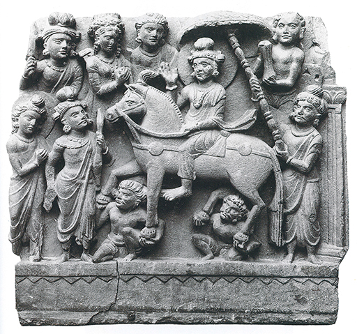
80 Gautama (Buda) abandonando su hogar, h. siglo II. Hallado en Loriyan Tangai, norte de Pakistán (antigua Gandhara); esquisto negro, 48 x 54 cm; Indian Museum, Calcuta.
El arte griego y romano, que enseñó a los hombres a representar a héroes y dioses en bellas formas, también ayudó a los indios a crear una imagen de su salvador. Las primeras estatuas de Buda, con su expresión de profundo sosiego, se realizaron también en esta región fronteriza de Gandhara (ilustración 81).
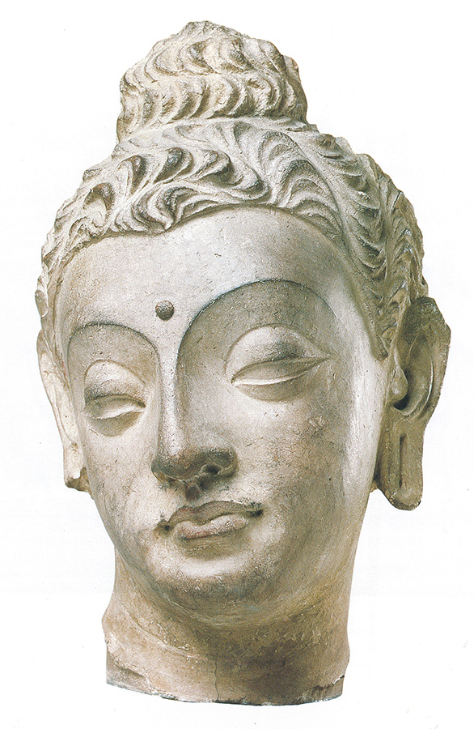
81 Cabeza de Buda, siglos IV-V. Hallada en Hadda, este de Afganistán (antigua Gandhara); yeso calizo con trazas de pigmento, 29 cm de altura; Victoria and Albert Museum, Londres.
Otra religión oriental que aprendió a representar su historia sacra para instruir a los creyentes fue la de los judíos. La ley judía prohibía, en realidad, la creación de imágenes por temor a la idolatría. Sin embargo, las colonias hebreas en las ciudades orientales decoraron las paredes de sus sinagogas con temas extraídos del Antiguo Testamento. Una de esas pinturas fue descubierta mediado este siglo en una pequeña guarnición romana de Mesopotamia llamada Dura-Europos. No es, en modo alguno, una obra de arte, pero sí un documento interesante del siglo III. El hecho mismo de que la forma parezca torpe, y la escena más bien plana y primitiva, no carece de interés (ilustración 82). Representa a Moisés sacando agua de la roca. Pero no es tanto una ilustración del relato bíblico como una explicación gráfica de su significación para el pueblo judío. Ésta puede ser la razón de que Moisés esté representado mediante una figura de gran tamaño frente al tabernáculo sagrado en el cual podemos distinguir todavía el candelabro de siete brazos. Para significar que cada tribu de Israel recibía su parte de agua milagrosa, el artista puso doce riachuelos, cada uno de los cuales corre hacia una pequeña figura delante de una tienda. El artista no fue, sin duda, muy hábil, y esto lo prueban algunos de estos trazos; pero tal vez no se proponía realmente dibujar figuras de mucho naturalismo. Cuanto más naturalista se mostrase, más pecaría contra el mandamiento que prohibía las imágenes. Su principal intención consistió en recordar al espectador la ocasión en que Dios manifestó su poder. La humilde pintura mural de la sinagoga judía es interesante para nosotros porque consideraciones similares empiezan a influir en el arte cuando la religión cristiana se desarrolla desde Oriente, poniendo asimismo el arte a su servicio.
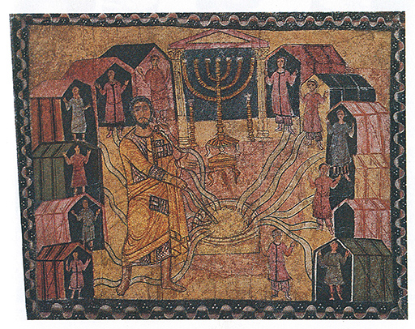
82 Moisés haciendo brotar agua de una roca, 245-256. Pintura mural; sinagoga de Dura-Europos, Siria.
La primera vez que se atrajo a los artistas cristianos para que representaran la figura del Cristo y sus apóstoles, fue nuevamente la tradición griega la que vino en su ayuda. La ilustración 83 muestra una de las primeras representaciones del Cristo, perteneciente al siglo IV. En lugar de la figura barbada a que estamos acostumbrados por las ilustraciones posteriores, vemos al Cristo en su juvenil belleza, sentado en un trono entre san Pedro y san Pablo que parecen filósofos griegos dignificados. Hay un detalle, en particular, que nos revela cuán estrechamente se halla relacionada todavía una representación semejante con los métodos paganos del arte helenístico: para indicar que el Cristo tiene su trono sobre el cielo, el escultor ha hecho que sus pies descansen sobre el dosel del firmamento, sostenidos por el antiguo dios del cielo.
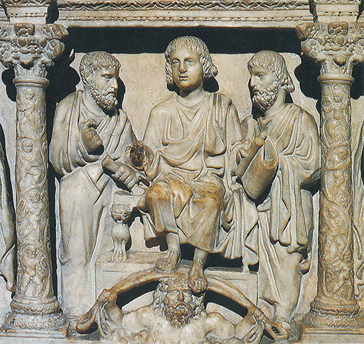
83 El Cristo con san Pedro y san Pablo, h. 389. Relieve en mármol del sarcófago de Junius Bassus; cripta de San Pedro, Roma.
Los orígenes del arte cristiano retroceden incluso más allá de lo que se ve en este ejemplo, pero en los monumentos primitivos nunca vemos representado al propio Cristo. Los judíos de Dura pintaron escenas del Antiguo Testamento en su sinagoga, no tanto para adornarla como para relatar la narración sagrada de manera visible. Los artistas a quienes primero se llamó para que pintaran imágenes del Cristo en los lugares de enterramiento cristiano —las catacumbas romanas— procedieron en gran medida dentro del mismo espíritu. Pinturas como Tres hombres en el horno de fuego ardiente (ilustración 84), perteneciente probablemente al siglo III, muestran que esos artistas estaban familiarizados con los procedimientos de la pintura helenística empleados en Pompeya. Se hallaban perfectamente capacitados para evocar la idea de una figura humana por medio de unas someras pinceladas. Pero por el carácter de su obra nos damos cuenta de que tales efectos y tales recursos no les interesaban demasiado. El cuadro ha dejado de existir como algo bello en sí mismo. Su propósito principal es evocar en los fieles uno de los ejemplos del poder y la clemencia del Dios. Leemos en la Biblia (Daniel, 3) que tres administradores judíos del rey Nabucodonosor se habían negado a postrarse y adorar la gigantesca estatua de oro del rey erigida en el llano de Dura, en la provincia de Babilonia. Al igual que muchos cristianos de la época en que se realizaron esas pinturas, tuvieron que sufrir el castigo de su negativa. Se les echó en un horno de fuego ardiente «con sus zaragüelles, túnicas, gorros y vestidos». Pero el fuego no tuvo poder contra sus cuerpos, ni siquiera se quemaron los cabellos de sus cabezas, sus ropas estaban intactas y tampoco olían a chamusquina. El Dios «ha enviado a su ángel a librar a sus siervos.»
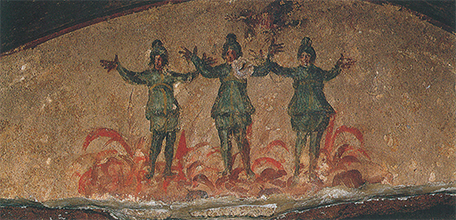
84 Tres hombres en el horno de fuego ardiente, siglo III. Pintura mural; catacumba de Priscilla, Roma.
Con sólo que imagináramos lo que el maestro del Laocoonte (ilustración 69) habría hecho con un tema así, advertiríamos qué dirección tan diferente tomaba el arte. El pintor de las catacumbas no deseaba representar una escena que tuviera dramatismo por sí misma. Para presentar ejemplos consoladores, que inspirasen fortaleza y salvación, bastaba con que pudiera reconocerse a los tres hombres con vestidos persas, las llamas y la paloma, símbolo de la ayuda divina. Todo aquello que no poseía significación era descartado. Las ideas de claridad y sencillez comenzaban a sobreponerse de nuevo a los ideales de una imitación fidedigna. Con todo, hay algo impresionante en el esfuerzo mismo realizado por el artista para describir su tema con tanta claridad y sencillez como le fuese posible. Esos tres hombres vistos de frente, mirando al espectador, con sus manos elevadas en oración, parecen mostrarnos que la humanidad ha comenzado a preocuparse de otros aspectos al margen de la belleza terrena.
No solamente en las obras religiosas del período de decadencia y hundimiento del Imperio romano podemos descubrir esa desviación del centro de interés. Pocos artistas parecían preocuparse de lo que había sido la gloria del arte griego, su armonía y refinamiento. Los escultores ya no tenían la paciencia de cincelar el mármol y de tratarlo con aquella delicadeza y refinamiento que habían sido el orgullo de los artistas griegos. Al igual que el pintor del cuadro de las catacumbas, empleaban métodos más expeditivos, tales como una especie de barreno para marcar los rasgos principales de un rostro o de un cuerpo. Se ha dicho con frecuencia que el arte antiguo declinó en esos años, y realmente es cierto que muchos secretos técnicos de la mejor época se perdieron en el general tumulto de guerras, invasiones y revueltas. Pero ya hemos visto que esta pérdida de habilidad no lo es todo. Lo principal es que en esa época los artistas ya no parecían satisfechos con el mero virtuosismo del período helenístico, por lo que trataron de conseguir nuevos efectos. Algunos retratos de este período, durante los siglos IV y V en particular, muestran acaso más claramente lo que esos artistas se proponían (ilustración 85). A un griego de la época de Praxíteles, tales retratos le habrían parecido rudos y bárbaros. En realidad, las cabezas no son bellas desde el punto de vista corriente. Un romano acostumbrado al sorprendente parecido de retratos como el de Vespasiano (ilustración 76) pudo haberlos desdeñado como pobres obras de artesanos. Y no obstante, a nosotros nos parece que tienen vida propia, y una muy intensa expresión debida a la firmeza con que están señalados los rasgos y al cuidado puesto en algunos, tales como la parte alrededor de los ojos y los surcos de la frente. Ellos nos revelan a la gente que presenció, y finalmente aceptó, el nacimiento de la cristiandad, que suponía tanto como la terminación del mundo antiguo.
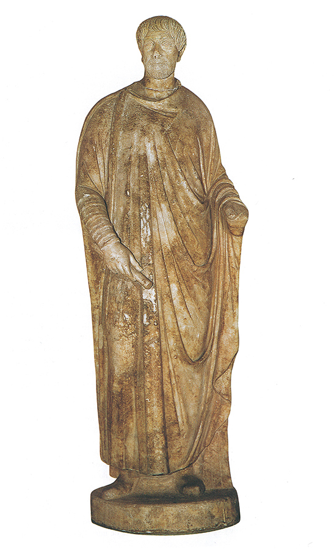
85 Retrato de un magistrado de Afrodisias, h. 400. Mármol, 176 cm de altura; Museo Arqueológico, Estambul.
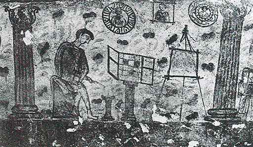
Un pintor de retratos funerarios en su taller (sentado junto a su caja de pinturas y su caballete), h. 100. Procedente de un sarcófago pintado hallado en Crimea.